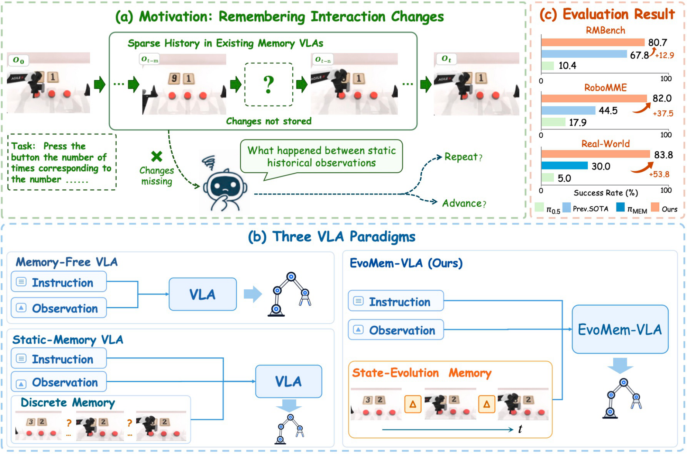
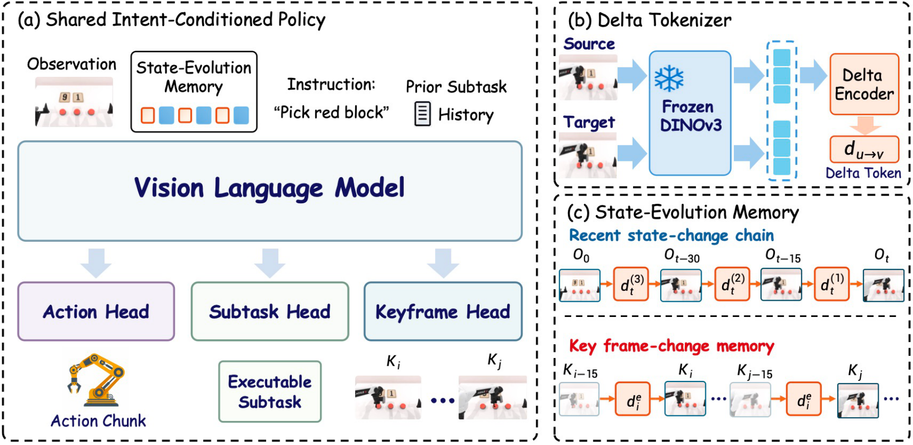
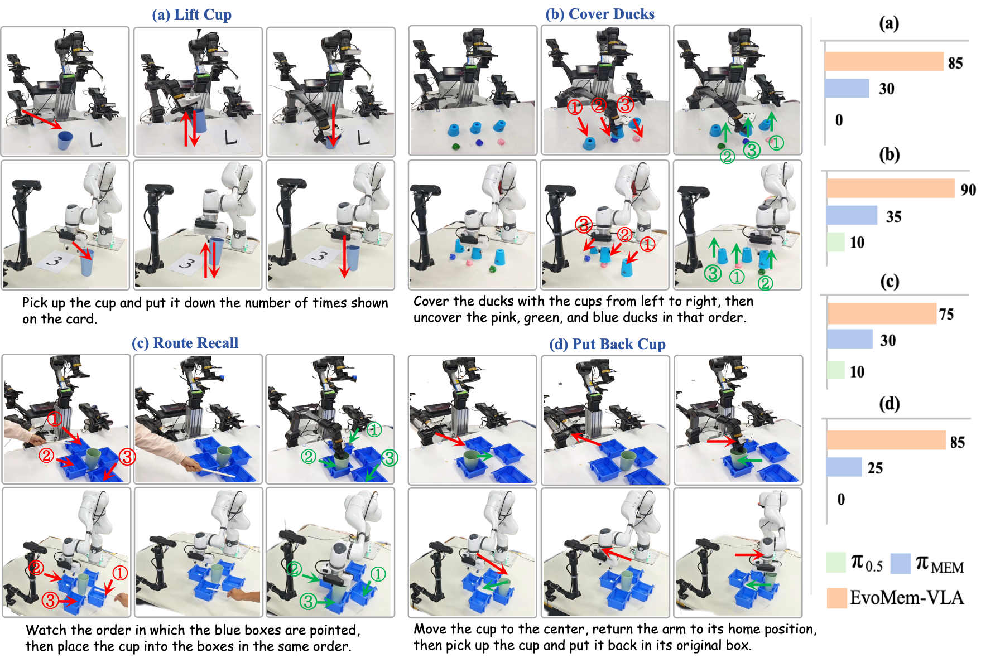

能拿到的是：一条把「交互前后变了什么」显式写成 768 维向量、并与目标帧证据绑定的可复用配方，单策略在 RMBench 上从 67.8% 推到 80.7%。代价是：多一条必须单独预训练的 tokenizer 链路，每步按对刷卡 token 预算，而且它的写入触发器依赖子目标边界标注，没有标注时只能退化成固定间隔。
- 最小可复用件
- 条件式 delta tokenization 的构造配方（冻结 DINOv3 ViT-B/16 + 单 token 瓶颈 + log-cosh 重建目标特征）与「固定 15 步配对 + delta 紧跟目标帧」的记忆排布规则；这两件事可以脱离它的 VLM 主干单独搬走。
- 主要风险
- 配对错位或相机抖动会被当成「状态变化」写进记忆；差分是相对量、没有绝对基准，长 episode 里只累积相对变化会缓慢漂移；消融显示「直接用特征相减」比「完全不给差分」更差（47.1% vs 52.3%），说明错误的差分是有害噪声而非中性信息。
- 复现门槛
- 8 卡、策略 8 万步（RMBench / RoboMME 各训一个联合策略）；Qwen3-VL-4B-Instruct 底座 + 官方 DeltaTok 权重 + DINOv3 ViT-B/16；tokenizer 适配另需每基准单独一轮。真机侧 4 任务 \(\times\) 每形态 50 条示范。
1 核心摘要
问题出在记忆的单位上。论文的出发点是：一个孤立的快照能告诉策略「当时是什么样」，但告诉不了它「上一次交互之后发生了什么」，而后者恰恰是判断任务进行到哪一步、下一步该做什么的依据。在最能说明问题的一个任务里（RMBench 的 Press Button），策略要按左键 9 次、中键 1 次、最后按终止键；每次按完按钮，场景位形几乎回到同一个样子，当前帧和任何一个关键帧都不携带「已经按了几次」这个信息。只要记忆里存的都是「状态」，策略就必须自己从若干状态里反推过程。
EvoMem-VLA 的答案是把过程本身存下来。它用 conditional delta tokenization 把一对有序帧 \((I_{u}, I_{v})\)（\(u \le v\)）压成一个 token：冻结的 DINOv3 抽出两帧的 patch 特征，一个带可学习 query 的配对编码器 \(g_\Delta \) 只保留「目标帧里源帧解释不了的部分」，解码器再从「源特征 + 这个 token」重建目标特征，用 log-cosh 损失预训练。这个瓶颈决定了 token 的性质——它是有方向的、以源为条件的变化表征，而不是像素差、光流场或动作编码。预训练完编码器冻结、解码器丢弃，只留 token。
这些 token 被组织成「多尺度状态演化记忆」：固定锚点保留 episode 首帧与 \(t-30\)、\(t-15\)、\(t\) 三帧；三个近期差分组分别编码 \((t-45,t-30)\)、\((t-30,t-15)\)、\((t-15,t)\)；每个被选中的事件帧 \(\kappa _{i}\) 再配一个从 \((\kappa _{i}-15, \kappa _{i})\) 算出的差分 token。排布规则很硬：每个 delta token 紧贴在它对应的目标帧前面，于是「变成了什么样」和「变成了什么」在序列里相邻，VLM 不需要自己去做对齐。共享的 Qwen3-VL-4B 主干在同一套记忆上支持两条路径：普通长时程任务直接出动作块，多阶段任务先生成一句可执行子任务再出动作，而走哪条路由由任务级配置写死，不是学出来的分类器。
证据侧给的是三个互不相通的评测：RMBench 九个任务一个联合策略 80.7%（此前最好 67.8%）、RoboMME 十六个任务 82.0%（最强基线 44.5%）、两个形态四个真机任务 83.8%（\(\pi\)MEM 30.0%、\(\pi_{0.5}\) 5.0%）。RMBench 上的消融最能说明设计取舍：去掉 delta token 掉到 52.3%，去掉子任务路由掉到 61.3%，而把学出来的差分换成「目标特征减源特征」掉到 47.1%——比完全不给差分还低。
判定：如果你的长时程失败模式是「两次视觉上几乎相同的状态需要不同动作」，那么这篇给出了当前最干净的一种记忆单元定义，值得照抄的是「差分 + 证据帧绑定 + 紧跟排布」这套数据结构，而不是它的 4B 主干；如果你的场景里没有可对齐的成对观测（多相机不同步、episode 内视角切换、或者目标物体被完全遮挡），这套差分退化成噪声的风险很高，先做一个 naive 相减的对照再决定。
2 记忆环节定位
它在五个环节里主命中两格：记忆表征（记忆单元是差分 token，不是帧也不是状态嵌入）和写入触发（用一个学出来的逐 offset 记录概率决定何时把「状态 + 变化」固化进事件库）。索引与检索只是部分命中——它没有相似度检索，读的时候是整条记忆无条件进上下文；长期维护也只是 FIFO 截断。
| 环节 | 输入 | 输出 | 交给下游 | 在线性 / 因果性 |
|---|---|---|---|---|
| 记忆表征 | 同一相机流内一对有序帧 \((I_{u}, I_{v})\)，间隔固定 15 个观测步 | 1 个 768 维 delta token（每对每流一个），经线性层投到 VLM 嵌入空间 | 与目标帧的视觉 token 交错成记忆序列 \(M_{t}\) | 因果。只使用 \(v \le t\) 的帧；不使用未来帧，不使用 oracle 状态或本体真值 |
| 写入触发 | 当前步的 action-query 状态 \(Z^{A}_{t}\) | 长度 H 的 sigmoid 概率向量，索引 j 对应时刻 \(t+j\) | 最高分的合格 offset 若超过阈值就预约一次拍摄 | 因果。只预测「何时记录」，不预测未来观测；预约到点才真正写入，逾期不补 |
| 索引与检索 | 固定锚点 + 事件库 + 当前观测 | 拼接后的单一 token 序列 | 整个序列作为前缀喂进 VLM | 无检索、无打分、无相关性过滤；容量满时按时间顺序丢最旧一条 |
| 动作接口 | 记忆序列 + 指令 + 可选的历史子任务文本 | 直接出动作块，或先出一句子任务再出动作块 | 残差 MLP 动作头 / 语言建模头 | 路由由任务级配置固定，运行时不切换、不判断复杂度 |
| 长期维护 | 事件库（容量 K） | FIFO 队列 | — | RoboMME K=16、真机 K=5；每个 episode 开始全部重置，不做跨 episode 保留 |
记忆单位：不是帧，也不是「帧 + 特征」，而是三元组 (源帧时刻 u, 目标帧时刻 v, 差分 token z)，并且这个三元组必须和它对应的目标帧视觉 token 成对出现——论文的措辞是「保留状态–变化对（state–change pairs）」，视觉 token 负责「看到了什么」，delta token 负责「这一对之间怎么变的」。
写入频率：分两层。近期链是每步重算的滑窗，不占存储，只是把最近 45 步按 15 步切三段；事件库是按需写入的，由 Keyframe Head 在概率超过阈值（RoboMME 0.55）时预约未来某个 offset，到点才落盘。所以写入频率不是常数，而是由「模型认为这一小段里发生了值得记的变化」决定，上界受容量 K 约束。
读取条件：无条件。每个重规划步都把锚点、近期差分链、全部已提交的事件条目拼成一条序列整体前向，没有 query、没有 top-k、没有注意力筛选。这带来一个直接后果——记忆越长，每一步的上下文越长，延迟随 K 线性增长（论文未报告延迟数据，此处为本页由配置推得的结构性结论）。
3 问题与动机
论文把现有路线的失败拆成四类，每一类都对应 Figure 1(a) 里同一张「稀疏历史」示意：序列上有 \(o_{0}\)、\(o_{t-m}\)、\(o_{t-n}\)、\(o_{t}\)，中间画着一个问号，问号旁边写着「Changes not stored」。
| 路线 | 代表工作（论文自述） | 记忆里存的东西 | 失败模式 |
|---|---|---|---|
| 无记忆 | RT-2、OpenVLA、\(\pi_0\)、QwenOFT、X-VLA | 只有当前观测 | 证据离开视野即丢失；重复计数的任务上当前帧与「已做几次」无关 |
| 压缩历史特征 | RoboFlamingo（LSTM 策略状态）、HAMLET（moment token + 因果记忆模块）、MemoryVLA（感知/认知长期记忆 + 检索） | 一个不可分解的聚合向量或一组记忆条目 | 变化被折进向量里，策略仍要自己从状态反推过程；条目之间的「差」没有被显式表达 |
| 稀疏关键帧 | EventVLA（初帧 + 近期窗 + 事件触发关键帧，有界记忆） | 被选中的少数几帧 | 选帧解决了「存什么」，没解决「变了什么」；关键帧之间靠模型脑补 |
| 短窗运动提示 | TraceVLA（把跟踪点轨迹叠加到当前图上） | 窗口内的像素级运动轨迹 | 与稀疏的长期状态证据不在同一接口上，无法回答「十步前那个动作有没有生效」 |
| 分层代理 | MemER（高层选帧+预测子任务，低层控制器执行） | 高层的帧库 + 子任务文本 | 低层控制器只拿到子任务文本、当前图像和本体状态，历史在接口处被切断 |
这里最值得注意的一条批评是针对 EventVLA 的：它把「事件触发的关键帧」做成了有界记忆，但每个条目仍然是状态。作者的判断是，长时程控制要求策略把「记住的状态」和「执行中的变化」关联起来，而如果记忆里只有前者，这个关联就必须在推理时被临时算出来——在视觉高度相似的重复动作里，这个临时计算并不可靠。Press Button 就是这个论断的最小反例：九次按左键之后，任何单帧都长得差不多，唯一能区分「第 7 次」和「第 8 次」的信息是「上一次按下到抬起之间发生了什么」。
Figure 1(b) 把三种范式并排画出来，是本页认为最值得引用的一张对照：memory-free 是「指令 + 观测 → VLA」；static-memory 是「指令 + 观测 + 离散记忆（几张小图，中间还夹着问号）→ VLA」；EvoMem-VLA 是「指令 + 观测 + 状态演化记忆（帧与 \(\Delta\) 标记交替，下面一条时间轴 \(t\)）」→ VLA。差别不在记忆的长短，而在记忆里有没有 \(\Delta\) 这个符号。

Figure 1：对比无记忆、静态记忆和状态演化记忆三种输入组织方式，并列出三个评测集的结果条。
4 方法拆解
4.1 输入、动作接口与优化目标
时刻 \(t\) 的输入是观测 \(o_{t}\)、指令 \(\ell\)，输出是长度 H 的动作块 \(A_{t} = [a_{t}, \ldots , a_{t+H-1}] \in \mathbb{R}^{H\times d_{a}}\)。视觉编码器 \(E_{v}\) 与语言嵌入层 \(E_\ell\) 给出 \(V_{t} = E_{v}(o_{t})\)、\(L = E_\ell(\ell)\)，拼成 \(X_{t} = [V_{t}; L]\)；再给 H 个 action-query token \(Q_{A}\)，主干 \(F_\theta \) 跑完后只取这 H 个 query 位置的状态：
\(Z^{A}_{t} = F_\theta ([X_{t}; Q_{A}])_{Q_{A}}\)，\(\hat{A}_{t} = G_\psi (Z^{A}_{t})\)
动作头是一个两层残差 MLP，隐藏宽度取 VLM 的两倍；损失是动作块上的 L1，按元素数归一化：\(L_{act} = \lVert \hat{A}_{t} - A_{t}\rVert_{1} / (H\cdot d_{a})\)。这套接口沿用 QwenOFT（StarVLA 框架），仿真底座是 Qwen3-VL-4B-Instruct，真机底座换成机器人预训练的 StarVLA/VLAct_Qwen3_Pretrain。EvoMem-VLA 相对这个基线的全部改动，就是把「当前视觉上下文」替换成下面定义的结构化历史——主干、query 数、动作头都没变，这一点对移植很关键。
需要提前记下的一个设计事实：\(Z^{A}_{t}\) 除了喂动作头，还被 Keyframe Head 复用。也就是说「什么时候该记账」这个判断，是从已经在算的动作表征上读出来的，不额外引入一条感知支路。
4.2 条件式差分 token 的构造
给定同一相机流里的一对有序帧 \((I_{u}, I_{v})\)，\(u \le v\)，冻结的 DINOv3 编码器 \(\phi \)（ViT-B/16）产出 patch 特征 \(f_{u} = \phi (I_{u})\)、\(f_{v} = \phi (I_{v})\)。配对编码器 \(g_\Delta \) 在一个可学习 query \(q_\Delta \) 的引导下，把「目标帧里源帧解释不了的信息」压成单个 token：
\(z_{u\to v} = g_\Delta (f_{u}, f_{v}; q_\Delta )\)，\(\hat{f}_{v} = h_\Delta (f_{u}, z_{u\to v})\)，\(L_\Delta = \operatorname{mean} \operatorname{log}-cosh(\hat{f}_{v} - f_{v})\)
三个细节决定了它是不是「差分」：
- 单 token 瓶颈：每对帧只出 1 个 768 维 token，编码器/解码器各 12 层，输入分辨率 \(256\times 256\)。信息损失是刻意的——如果允许出几十个 token，它就会退化成「把目标帧也存一遍」，记忆又回到帧的粒度。
- 源条件化：\(g_\Delta \) 同时看 \(f_{u}\) 和 \(f_{v}\)，但目标被条件在源上重建，所以 token 编码的是相对源的变化，天然有方向（\(z_{u\to v} \ne z_{v\to u}\)），也天然对「背景没变」这件事不敏感——没变的部分已经被源解释了。
- 与像素差/光流/动作码的区别：论文明确排除了这三者。它不是几何量，没有物理单位，不保证可解释；它是由「能否重建目标特征」这个目标逼出来的语义差分。
训练分两阶段，这是复现时最容易踩坑的地方。第一阶段只训 tokenizer：冻结 \(\phi \)，从 DeltaTok 官方权重初始化，在每个基准自己的示范数据上适配，只更新 \(g_\Delta \) 与 \(h_\Delta \)，8 卡、每卡 16、全局 128、lr 1e-4、weight decay 1e-2、bf16。第二阶段把 \(\phi \) 和 \(g_\Delta \) 一起冻结、把 \(h_\Delta \) 整个丢掉，只训练 VLA 主干、delta 投影层、动作头和 Keyframe Head。所以 \(L_\Delta \) 不出现在第二阶段的损失里，两阶段之间没有联合微调。真机实验更省：直接用官方预训练 DeltaTok，不做任何域适配。
配套的消融很值得单独看：把学出来的 \(g_\Delta \) 换成「目标特征减源特征再投影」，RMBench 上只有 47.1%，低于完全不给 delta token 的 52.3%。作者的解释是「仅暴露特征差异不够」，本页的读法是更具体的：原始 DINOv3 特征相减会把相机微动、光照变化、背景纹理这些与任务无关的高维分量原封不动塞进上下文，而条件式瓶颈恰好把这些「源能解释的部分」滤掉了。这条对照反过来给了你一个免费的验收测试——如果你的差分模块和 naive 相减打平，说明它没学到任何东西。
4.3 记忆组装：配对规则、写入触发与容量
记忆 \(M_{t}\) 由两部分拼成，第一部分是固定锚点与近期链：
\(M^{anc}_{t} = [V_{0}; d^{(3)}_{t}; V_{t-30}; d^{(2)}_{t}; V_{t-15}; d^{(1)}_{t}; V_{t}]\)
其中 \(d^{(1)}_{t}\) 最新、\(d^{(3)}_{t}\) 最旧，分别对应 \((t-45,t-30)\)、\((t-30,t-15)\)、\((t-15,t)\) 三对，每个相机流各出一个 token。第二部分是事件库，按拍摄顺序追加：
\(M_{t} = [M^{anc}_{t}; (d^{e}_{i}; V_{\kappa _{i}})_{i=1..m_{t}}]\)，其中 \(d^{e}_{i}\) 来自 \((\kappa _{i} - 15, \kappa _{i})\)，只用主视角。
这四行公式里藏着五条可执行约束，抄的时候一条都不能省：
| 约束 | 取值 / 规则 | 为什么重要 |
|---|---|---|
| 配对间隔 | 固定 15 个观测步（近期链与事件对都一样，\(\delta _{e} = 15\)） | 间隔固定意味着差分 token 的「语义尺度」统一；间隔变大，差分里混入的动作阶段就越多，token 越难被 VLM 解释 |
| 配对边界 | 只在同一 episode 内配对，绝不跨 episode；负索引 clamp 到 0，复用首帧 | 跨 episode 配对会产生物理上不存在的变化；clamp 让 episode 开头几帧的「差分」退化为「首帧 vs 首帧」，等于空 token |
| 配对范围 | 近期链在每个相机流内部配对；事件对只用主视角 | 跨相机配对没有意义（不同视角的「变化」不可加），这条避免了最常见的实现错误 |
| 排布顺序 | 每个 delta token 紧贴在它的目标帧之前；事件条目按拍摄时刻排序 | 让「变成了什么」和「怎么变的」在序列里相邻，VLM 不用学位置对应关系 |
| 源帧处理 | 仅作为 tokenizer 输入的源帧不额外加入 RGB 记忆 | 否则 \((t-45)\) 这类帧会被重复计入，记忆预算里出现冗余条目 |
写入触发是一个独立的头。它读 action-query 状态，输出逐 offset 的记录概率：
\(\hat{p}_{t} = \sigma (k_\omega (Z^{A}_{t})) \in [0,1]^{H}\)，索引 \(j = 0,\ldots ,H-1\) 对应时刻 \(t+j\)
系统只在最高分的合格 offset 上、且概率超过阈值（RoboMME 取 0.55）时才预约一次拍摄；到那个时刻才真正写入，容量满则丢最旧一条（RoboMME K=16，真机 K=5）。这个头的监督是正类加权的二元交叉熵，正类权重 7，损失权重 \(\lambda _{kf} = 1\)；正样本的 offset 来自数据集里的子目标边界标注（RoboMME 提供 subgoal-boundary annotation，与其子任务文本一起按 episode 时间步对齐）。
这里有两个必须写清楚的事实。第一，它不预测未来观测，只预测「何时记录」，所以调度本身不破坏因果性；预约可以落空，落空就什么都不发生。第二，RMBench 上 keyframe memory 是关闭的——那张表里只有固定锚点 + 三组近期差分，没有事件库。作者没有解释原因，但从数据条件看是自洽的：RMBench 只提供 episode 级子任务文本段，没有逐帧边界标注，Keyframe Head 缺少监督信号。这条对复现者的含义很直接：事件写入这条链路不是开箱可用的，它依赖带边界标注的数据集；没有标注时，你手上的版本就是 RMBench 配置——固定间隔差分，没有学出来的触发器。
4.4 共享主干与两条动作路径
记 \(C_{t} = [M_{t}; L; E_\ell(R_{t})]\)，\(R_{t}\) 是此前的子任务文本（direct 路径下为空）。子任务路径先解码一句可执行子任务，再把它接回同一份上下文做第二遍前向：
\(\hat{s}_{t} = Decode_\theta (C_{t})\)，\(\hat{A}_{t} = \Pi _{\theta ,\psi }([C_{t}; E_\ell(\hat{s}_{t})])\)
direct 路径就是 \(\hat{A}_{t} = \Pi _{\theta ,\psi }(C_{t})\)。两条路径共享视觉编码器、delta 投影、VLM 主干、action query、动作头和 Keyframe Head，唯一变化的是条件路径。
关于「它怎么在两条路径之间选」，论文的表述毫无含糊：「task-adaptive routing is specified by task-level configuration rather than a learned complexity classifier」。也就是说这是启发式的、写死的配置，不是路由网络。具体的分配是：RMBench 五个 M(1) 任务走 direct、四个 M(n) 任务（Battery Try、Blocks Ranking Try、Cover Blocks、Press Button）走子任务路径；RoboMME 全部 16 个任务走子任务路径；训练和评测期间配置不变。真机四任务的路由配置未在已核验材料中明确。
推理时的子任务历史 \(R_{t}\) 是累积的生成文本，去空、去连续重复，每个 episode 重置。论文专门声明了一句：它记录的是「此前的预测」，不是「已验证的任务完成」。这句限制很重要——如果生成的子任务是错的，它会被写进 \(R_{t}\) 并在后续步骤里持续污染上下文，而系统没有任何回退或校验机制。
训练目标是三项加权：\(L = L_{act} + \lambda _{lang}\cdot L_{lang} + \lambda _{kf}\cdot L_{kf}\)，\(\lambda _{lang} = 0.005\)。所有样本都算 \(L_{act}\)；只有子任务路径的样本算 \(L_{lang}\)（token 级交叉熵，视觉输入、prompt、action query 全部屏蔽），direct 样本贡献零语言损失。动作训练用的是标注的子任务文本，部署时用的是生成的子任务文本——这是一个训练/推理分布差，论文明确承认了但没做缓解。

Figure 2：(a) 共享 VLM 连接动作、子任务与关键帧预测头；(b) 条件式差分 token 由成对帧构造；(c) 近期链和事件库把每个 \(\Delta\) 放在目标帧之前。
5 证据与实验
三个评测集各自独立，没有任何一个数字是跨集合通用的。先把协议摊开，再看数字。
| 评测 | 任务与规模 | 策略数 | 每任务 episode | 平均口径 |
|---|---|---|---|---|
| RMBench | 9 个双臂任务（5 个 M(1) + 4 个 M(n)），共 900 episode | 1 个，9 任务联合训练 | 100 | 按任务数加权（5 与 4 的算术平均），不是两组均值再平均 |
| RoboMME | 16 个任务，四类记忆能力（counting / permanence / reference / imitation），共 1600 episode | 1 个，16 任务联合训练 | 100（50 easy + 25 medium + 25 hard） | 先类内平均，再四类等权平均 |
| 真机 | 4 个任务 \(\times\) 2 个形态（Franka 单臂 / AgileX COBOT 双臂），共 80 episode | 2 个，每个形态一个 | 10（每形态每任务） | 先合并两形态的 20 个 episode 得每任务成功率，再四任务等权平均 |
5.1 RMBench：单策略 80.7%，M(n) 提升最大
| 方法 | M(1) 均值 | M(n) 均值 | Overall |
|---|---|---|---|
| QwenOFT | 0.0 | 12.8 | 5.7 |
| \(\pi_{0.5}\) | 14.4 | 5.5 | 10.4 |
| X-VLA | 11.8 | 7.3 | 9.8 |
| Mem-0 | 52.8 | 28.5 | 42.0 |
| MemoryVLA（QwenOFT 版） | 44.2 | 38.8 | 41.7 |
| EventVLA（仅视觉证据） | 79.0 | 54.0 | 67.8 |
| EvoMem-VLA | 84.0 | 76.5 | 80.7 |
相对 EventVLA 的 67.8%，总体高 12.9 点；拆开看，M(1) 只高 5.0 点（\(79.0\to 84.0\)），M(n) 高 22.5 点（\(54.0\to 76.5\)）。这个不对称是全文最重要的一条证据结构：增益集中在需要多段历史的任务上，单段记忆任务上它只是小胜。任务级上它在 9 个任务里全部排进前二，Rearrange Blocks / Swap Blocks / Swap T 三个到 100.0%，Press Button 从 EventVLA 的 3.0% 跳到 70.0%（这也是唯一一个它自己没到 96% 以上的任务，说明这类「九次重复 + 阶段切换」还没被彻底解决）。
5.2 RoboMME：82.0%，四类能力全领先
| 方法 | Counting | Permanence | Reference | Imitation | Avg. |
|---|---|---|---|---|---|
| \(\pi_{0.5}\) | 28.8 | 17.0 | 17.2 | 8.8 | 17.9 |
| SimpleSG（QwenVL） | 44.6 | 19.6 | 25.2 | 26.6 | 29.0 |
| GroundSG（QwenVL） | 38.0 | 39.3 | 31.6 | 21.9 | 32.7 |
| TokenDrop（Modul） | 52.3 | 26.8 | 34.7 | 38.3 | 38.0 |
| FrameSamp（Modul） | 65.2 | 25.1 | 36.3 | 51.4 | 44.5 |
| MemER | 48.8 | 53.2 | 38.0 | 29.5 | 42.4 |
| EvoMem-VLA | 86.5 | 88.5 | 74.5 | 78.5 | 82.0 |
比最强基线 FrameSamp（44.5%）高 37.5 点，比 MemER（42.4%）高 39.6 点。四类里 Reference（74.5%）明显低于其他三类（86.5 / 88.5 / 78.5），说明「按示范的空间指代顺序做事」这类任务对状态差分的收益最小——顺序信息不在「变化」里，而在「哪一次指向了哪里」的序列索引里。
5.3 真机：四任务 83.8%
| 任务 | 考察的记忆能力 | \(\pi_{0.5}\) | \(\pi\)MEM | EvoMem-VLA |
|---|---|---|---|---|
| Lift Cup | 按卡片数字重复举起放下（3–10 次），次数必须精确 | 10.0 | 30.0 | 85.0 |
| Cover Ducks | 遮挡后仍记得三只鸭子的身份，按粉–绿–蓝顺序揭开 | 10.0 | 35.0 | 90.0 |
| Route Recall | 记住人指认蓝盒的 3–6 步顺序（含重复），按序放置 | 10.0 | 30.0 | 75.0 |
| Put Back Cup | 经过一个共用的中间位置后，仍记得杯子原本在哪个盒子 | 0.0 | 25.0 | 85.0 |
| 平均 | — | 5.0 | 30.0 | 83.8 |
真机这条对比是同协议的：\(\pi_{0.5}\) 与 \(\pi\)MEM 都在同一批示范上微调，每方法每形态单独训练，评测条件一致。每形态给它自己的策略（Franka 单主视 + 单腕视；AgileX 单主视 + 双腕视），每任务 50 条示范、每形态 200 条、四任务合计 400 条。三个任务的成功判据都要求完整序列正确，任一步错序即判失败，这比「最终物体到位」严格得多。

Figure 3：四个真机任务的执行序列与成功率依次为 85%、90%、75% 和 85%，平均为 83.8%。
5.4 消融：差分是主贡献，路由只补多阶段
| 变体 | M(1) | M(n) | Overall |
|---|---|---|---|
| 完整模型 | 84.0 | 76.5 | 80.7 |
| 学出来的差分 → naive 特征相减 | 52.0 | 41.0 | 47.1 |
| 去掉子任务路由 | 84.0 | 33.0 | 61.3 |
| 去掉 delta token | 59.0 | 44.0 | 52.3 |
| 两者都去掉 | 55.0 | 31.0 | 44.3 |
这是一个完整的 \(2\times 2\)：去掉 delta 掉 28.4 点，去掉路由掉 19.4 点。更有信息量的是两个方向性结论：去掉路由时 M(1) 完全不变（\(84.0\to 84.0\)），说明路由只对多阶段任务起作用；naive 相减比不给差分还低 5.2 点，说明「原始差分是有害的」而不只是「无用的」。从「两者都去掉」这个 44.3% 的状态出发，只恢复 delta 得到 61.3%（+17.0），只恢复路由得到 52.3%（+8.0）——两条路各自独立有效，叠加才到 80.7%。
5.5 这些数字为什么不能相加、也不能横向排名
- 分母不同、平均口径不同。RMBench 是 9 任务 \(\times\) 100 episode 的按任务数加权；RoboMME 是 16 任务 \(\times\) 100 episode 的「类内平均再等权」；真机只有每任务 20 个 episode（两形态各 10）。三个 80.7 / 82.0 / 83.8 的分母、任务集、难度分层（RoboMME 还刻意分 easy/medium/hard）都不一样，把它们平均或相加没有任何统计含义。
- 基线数字来自已发表结果，不是重跑。论文 Table 8 明确说 DP、ACT、\(\pi_{0.5}\)、X-VLA、Mem-0、MemoryVLA、EventVLA 的分数取自 EventVLA 附录与 RMBench 原文，RoboMME 的基线全部取自 RoboMME 基准报告，没有重新实现或重训。RoboMME 报告本身是「每任务 50 episode、3 个随机种子 \(\times\) 3 个 checkpoint 取平均」，本文则是「每任务 100 episode」——同基准但不同评测预算。
- 一处已知的口径不一致。论文自述：EventVLA 的 RMBench 总体分数保留其发表的 67.8% 而没有按其展示的任务级分数重算，其余方法的组均值与总均值都是重算的。这意味着 80.7% 与 67.8% 这 12.9 点的差里，混入了两种平均口径的差异。
- 两个基准的基线集合不交叉。RMBench 有 EventVLA 与 Mem-0，RoboMME 没有；RoboMME 有一堆 TokenDrop / FrameSamp / TTT / RMT 这类「记忆表示策略」的受控变体，RMBench 没有。因此在什么基准上赢谁，不能互相外推。
- 真机样本量小且无方差。每任务 20 个 episode、单一随机种子，论文未报告置信区间或多种子波动。83.8% 与 30.0% 的差距远大于这种量级的噪声，方向上可信；但 85% 与 90% 这类任务间排序不应被当真。
6 优点、局限与 VLA 适配
可迁移
① 「把变化本身做成记忆单元」这个抽象，与主干无关，可以直接插到任何接受 token 前缀的 VLA 上；② 单 token 瓶颈 + 源条件化重建这个训练目标，是一个可独立复用的自监督任务（用你自己的机器人视频训，不需要任何动作标签，也不需要子目标标注）；③ 「delta 紧跟目标帧」的排布规则和五条配对约束，是纯粹的工程约定，抄过去零成本；④ 固定锚点（首帧 + 近三帧）这套低成本骨架，本身就是一个够用的基线。
不成立的前提
① 需要同一相机流内连续、可对齐的帧对——多相机异步、episode 内切换视角、或者频繁遮挡导致目标帧缺内容时，差分编码的是遮挡而不是任务状态；② 学出来的写入触发需要子目标边界标注，RMBench 上就是因为没有这个标注而直接关掉了事件库；③ 真机用的是官方通用 DeltaTok 权重、未做域适配，这套跨域泛化能力是外部组件的功劳，不能记在自己账上；④ 每个基准训一个联合策略、真机每种形态训一个策略，不是单一模型跨具身泛化。
延迟与显存。论文没有报告推理延迟、吞吐或显存占用，这些数字未在已核验的公开材料中确认。但结构上可以推算（本页推算，非论文数据）：RMBench 有 3 路相机（头 + 双腕），三组近期差分 → 9 个 delta token；四个锚帧 \(\times\) 3 路 = 12 帧视觉 token。RoboMME 两路相机 → 6 个近期 delta，加上 16 条事件（16 个 delta + 16 帧主视）→ 事件部分就有 32 个条目。也就是说，事件库开满时，每步前向要多吞相当于十几帧的 token 量，且这是每步无条件全量读，没有检索裁剪。K=16 是有界但不算小，在 10 Hz 级别的控制频率下这很可能成为瓶颈——这一点必须自己先测，别照抄。
真机闭环风险。三个具体点。第一，\(\delta _{e} = 15\) 是相对观测步的固定滞后，真机配置是「预测 30 步动作块、执行前 16 步后重规划」，15 步滞后与 16 步执行长度几乎重合，意味着事件 delta 的源帧可能正好落在上一次动作块的中段——差分描述的「变化」跨了一次重规划边界，语义上不再干净（此为本页基于配置的推断，论文未讨论）。第二，\(R_{t}\) 是累积的生成文本，一旦某步生成错的子任务，它会持续污染后续上下文，而系统无校验、无回滚；论文对此只做了声明，没有缓解。第三，事件写入是「预约 + 到点提交」，如果预约时刻的控制循环被跳过（真机上很常见），这次写入就永久丢失且不会被补偿。
最小改造方案。如果只想验证「差分是否有用」，不必动主干：在现有 VLA 的视觉前缀里，对最近三对 \((t-45,t-30)\)、\((t-30,t-15)\)、\((t-15,t)\) 各插一个 delta token，插在目标帧之前；tokenizer 用冻结 DINOv3 + 单 token 瓶颈 + log-cosh 重建，在自己的演示数据上单独训到收敛（不需要动作标签）。这是最小改动、也最能证伪的一步。若这一步在你的任务上没有提升，问题多半出在配对（间隔太大、跨视角、跨 episode 边界）而不是表达力——先用 naive 特征相减做对照，如果相减反而更差而学出来的差分也没提升，说明你的场景里「变化」本身不是区分任务的变量，应当换别的记忆单位。
与站内其它路线的关系。本页认为它最适合与 专题三 里以关键帧为单位的路线对照阅读：同样的「事件触发写入」机制，记忆单元换成差分后，在多阶段任务上拿到的增益明显更大（M(n) \(54.0\to 76.5\)），代价是必须多训一个 tokenizer、并且丧失了「回看原始帧」的能力——它存的证据帧是绑在差分上的，不是独立可检索的帧库。
7 落地清单
- 先只训 tokenizer，把重建质量当验收门槛。冻结 DINOv3 ViT-B/16，输入 \(256\times 256\)，编码/解码各 12 层，输出 1 个 768 维 token；8 卡、每卡 batch 16、全局 128、lr 1e-4、weight decay 1e-2、梯度裁剪 1e-2、bf16，损失为 patch 与特征维上平均的 log-cosh。验收：在留出 episode（不是训练 episode）上，重建 log-cosh 必须明显低于「直接复制源特征」这个退化基线，否则 token 没有承载任何目标信息。
- 把配对写成硬约束，不要留给 dataloader 自由采样。同相机流、同 episode、固定间隔 15 步、负索引 clamp 到 0、源帧不进 RGB 记忆、delta 紧跟目标帧。上线前打印 20 组抽样对的源/目标帧人眼过一遍——配对错误是这套方法最贵的 bug，而且它不会报错，只会悄悄掉点。
- 写入触发先用规则版，再考虑学习版。如果没有子目标边界标注，直接采用 RMBench 配置（关闭事件库，只保留首帧 + 近三帧 + 三组近期差分），这是本文验证过的可用最小集；有边界标注时再训 Keyframe Head，正类权重 7、\(\lambda _{kf} = 1\)、阈值 0.55、容量 K=16、FIFO 淘汰、episode 重置。
- 路由写死，别训分类器。论文明确用任务级配置而非学习路由：单段任务走 direct，多阶段任务走「先生成子任务再出动作」。落地时按任务语义分组即可，同时保留 direct 路径作为消融对照——去掉路由在 M(1) 上是零影响，这个对照能帮你判断你的任务到底属于哪一类。
- 必做 naive 特征差对照。同一批配对、同一投影层，把学出来的 \(g_\Delta \) 换成「目标 DINOv3 特征 − 源 DINOv3 特征」。论文里它掉到 47.1%（比不给差分还低 5.2 点）。如果你的实现里这个对照没有明显掉点，说明你的差分模块和恒等映射等价，条件式瓶颈没起作用。
- 上线后监控三件事：每步写入事件的 (\(\kappa\), 源帧时刻, 触发概率) 三元组、每步记忆序列的实际 token 数（对照你测到的延迟）、以及 \(R_{t}\) 的累积长度与重复率。第一条用来抓「源帧与目标帧之间其实没发生任务相关变化」的伪写入，后两条用来抓上下文膨胀与子任务文本自污染。
来源：Yuheng Na, Zhide Zhong, Junjie He, Junfeng Li, Haodong Yan, Jiaan Wang, Jiaguan Zhu, Yangyang Zheng, Tianyu Huang, Haoang Li, "EvoMem-VLA: State-Evolution Memory for Long-Horizon Robot Manipulation", arXiv:2610.05418v1, 2026-10-04；数字取自 Table 1（RMBench）、Table 2（RoboMME）、Table 3（消融）、Table 7–8 与 Appendix A.2–A.5、B.1–B.3（协议与超参）、Figure 3（真机四任务）。项目页 https://yuhengna.github.io/EvoMem-VLA/。
相关页面：专题三 · 在线记忆 · MiKASA-Robo · 返回首页